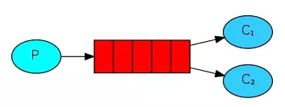
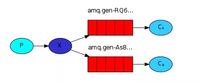
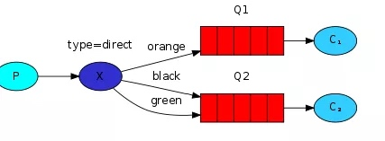
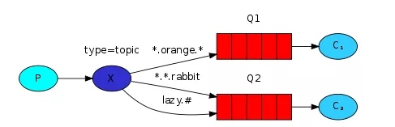

①simple模式（即最简单的收发模式）

消息产生消息，将消息放入队列
消息的消费者(consumer) 监听 消息队列,如果队列中有消息,就消费掉,消息被拿走后,自动从队列中删除(隐患 消息可能没有被消费者正确处理,已经从队列中消失了,造成消息的丢失，这里可以设置成手动的ack,但如果设置成手动ack，处理完后要及时发送ack消息给队列，否则会造成内存溢出)。
②work工作模式(资源的竞争)
消息产生者将消息放入队列消费者可以有多个,消费者1,消费者2同时监听同一个队列,消息被消费。C1 C2共同争抢当前的消息队列内容,谁先拿到谁负责消费消息(隐患：高并发情况下,默认会产生某一个消息被多个消费者共同使用,可以设置一个开关(syncronize) 保证一条消息只能被一个消费者使用)。
③publish/subscribe发布订阅(共享资源)

每个消费者监听自己的队列；
生产者将消息发给broker，由交换机将消息转发到绑定此交换机的每个队列，每个绑定交换机的队列都将接收到消息。
④routing路由模式

消息生产者将消息发送给交换机按照路由判断,路由是字符串(info) 当前产生的消息携带路由字符(对象的方法),交换机根据路由的key,只能匹配上路由key对应的消息队列,对应的消费者才能消费消息;
根据业务功能定义路由字符串
从系统的代码逻辑中获取对应的功能字符串,将消息任务扔到对应的队列中。
业务场景:error 通知;EXCEPTION;错误通知的功能;传统意义的错误通知;客户通知;利用key路由,可以将程序中的错误封装成消息传入到消息队列中,开发者可以自定义消费者,实时接收错误;
⑤topic 主题模式(路由模式的一种)

星号井号代表通配符
星号代表多个单词,井号代表一个单词
路由功能添加模糊匹配
消息产生者产生消息,把消息交给交换机
交换机根据key的规则模糊匹配到对应的队列,由队列的监听消费者接收消息消费
（在我的理解看来就是routing查询的一种模糊匹配，就类似sql的模糊查询方式）